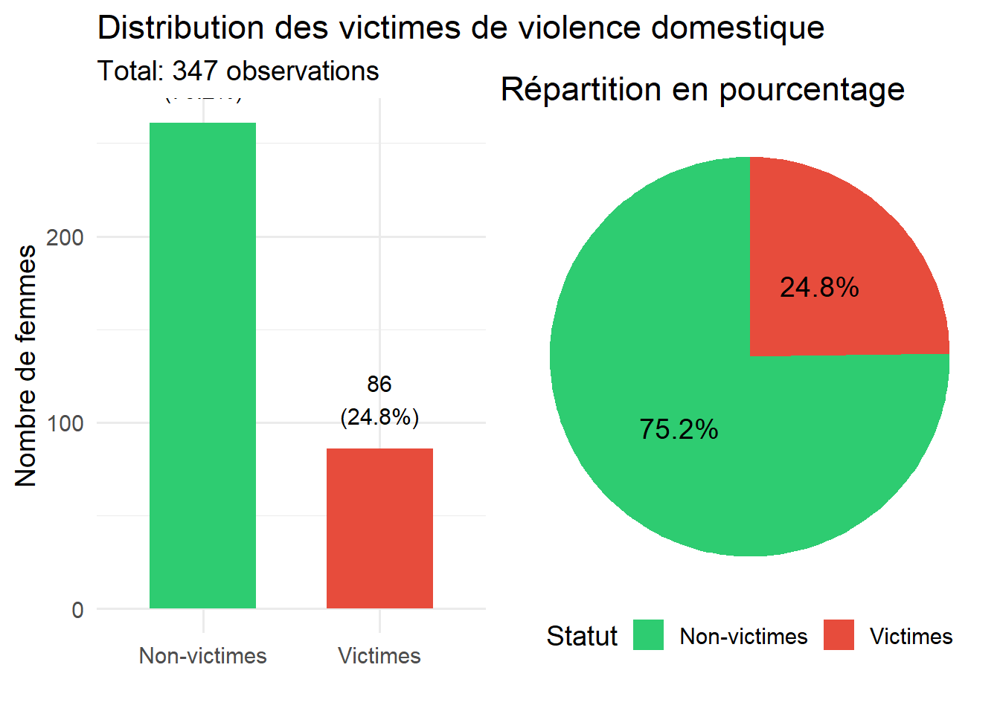
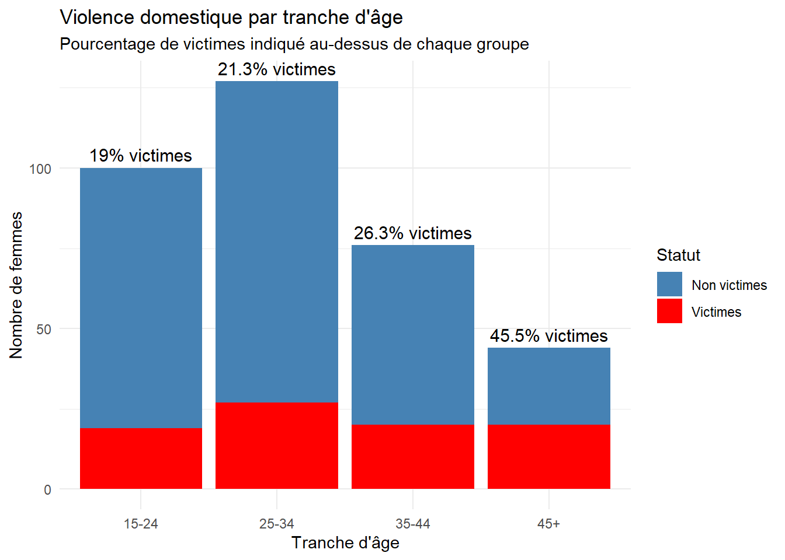
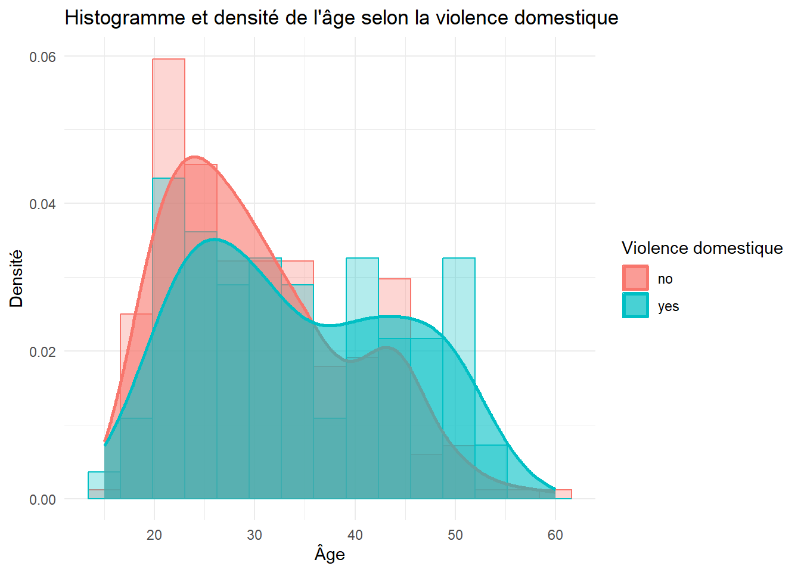
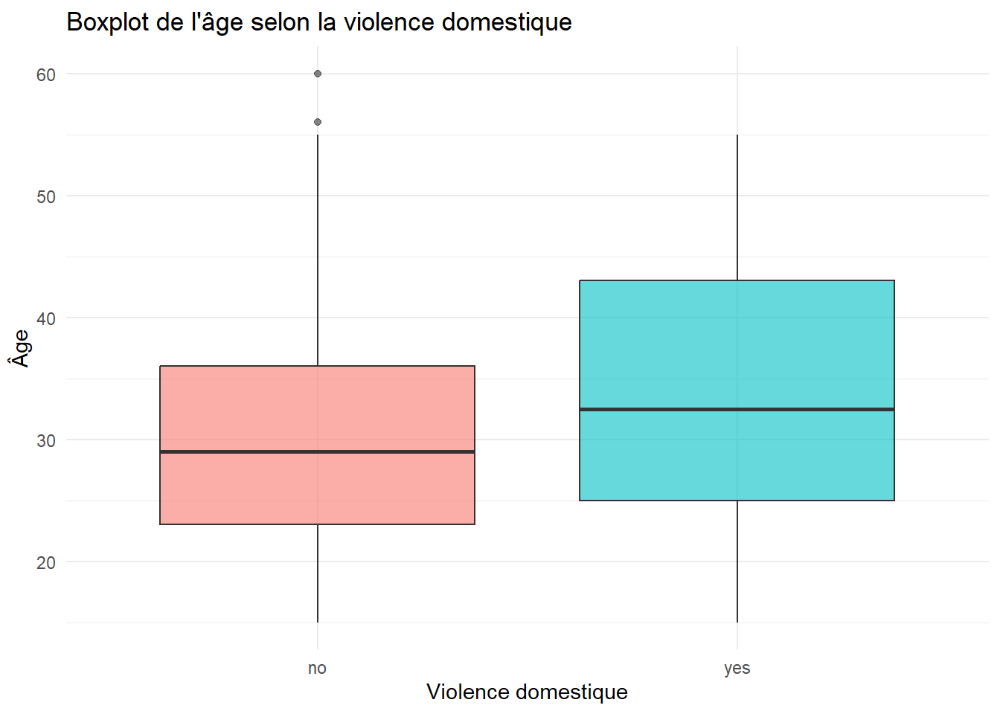
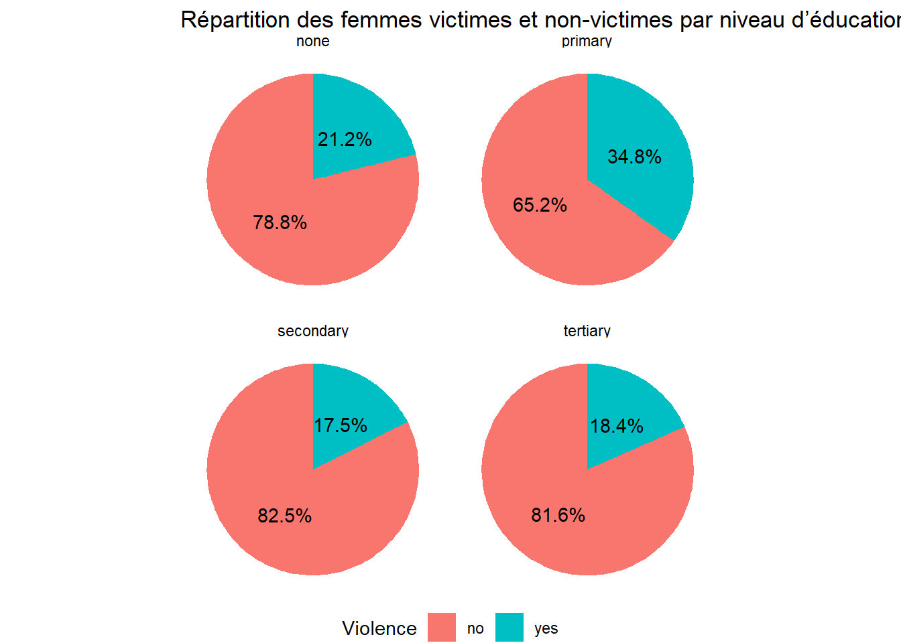
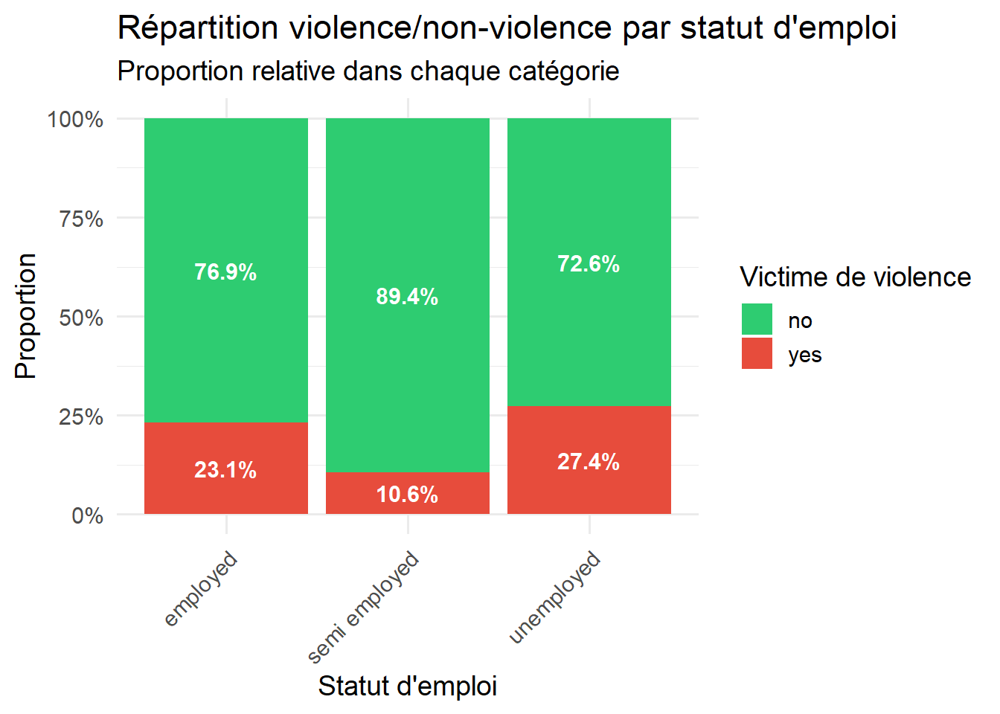
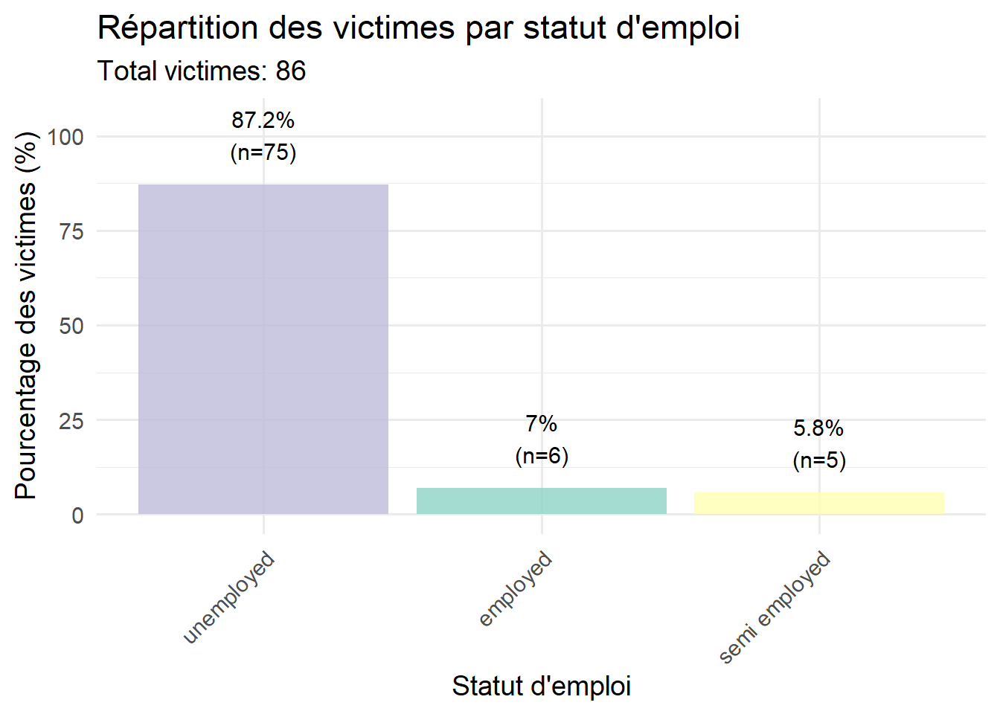
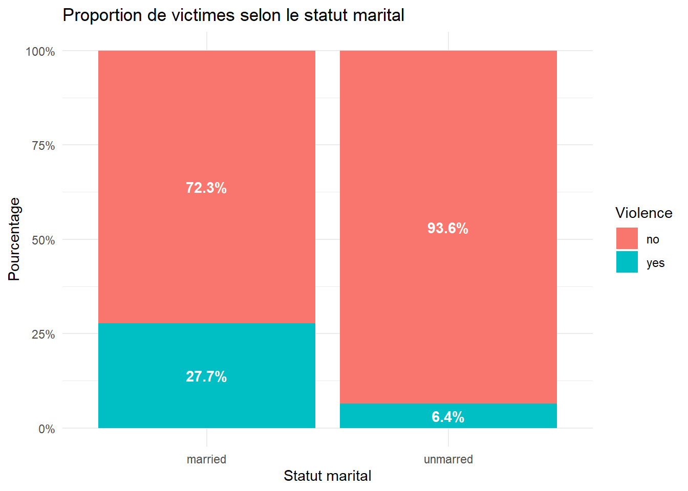
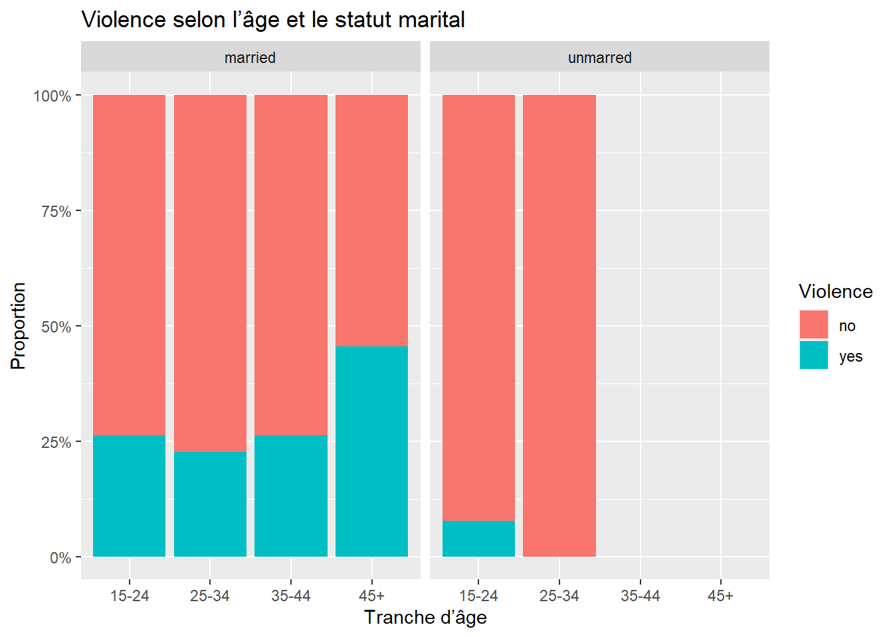
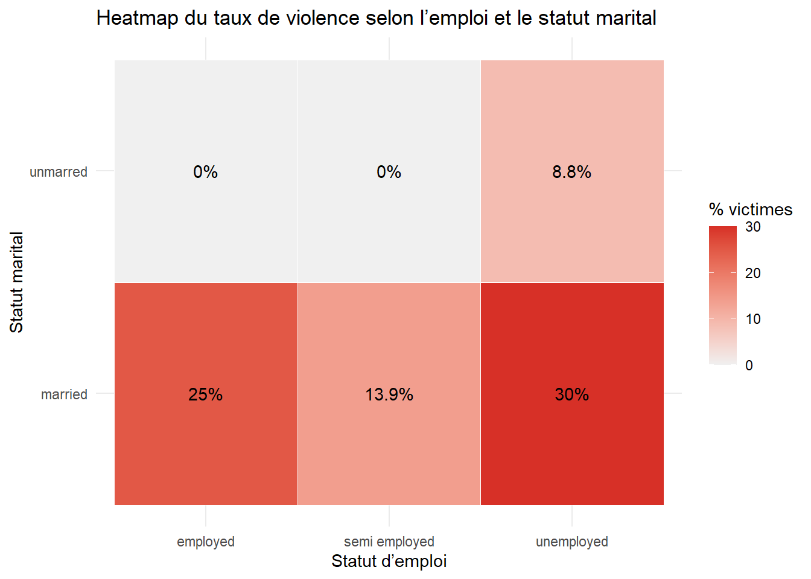

Exploration statistique de la violence domestique envers les femmes à partir de données sociales
Published
December 27, 2025
1 Introduction
La violence domestique envers les femmes est un problème social majeur dans de nombreux pays, affectant gravement la santé physique, psychologique et sociale des victimes. Comprendre les facteurs qui contribuent à cette violence est essentiel pour développer des stratégies de prévention efficaces et des politiques adaptées.
Ce projet vise à analyser statistiquement un dataset portant sur la violence domestique dans une zone rurale d’un pays en développement.
L’objectif principal est d’explorer les corrélations entre ces facteurs et l’expérience de la violence domestique, afin d’identifier les profils les plus à risque et de fournir des insights pertinents pour la prise de décision et la sensibilisation sur ce problème social. Cette analyse permettra également de mettre en lumière l’importance de l’éducation, de l’emploi et du statut marital dans la vulnérabilité des femmes face à la violence domestique.
2 Déscription de la dataset
Le dataset étudié concerne la violence domestique à l’encontre des femmes. Les données ont été extraites d’une enquête menée auprès de femmes dans une région rurale d’un pays en développement et sont disponibles sur Kaggle. Le dataset comprend 347 observations, incluant à la fois des femmes ayant subi des violences et des femmes n’en ayant pas été victimes. Les variables recueillies sont de nature socio-économique et démographique, telles que l’âge, le niveau d’éducation, le statut marital, l’emploi et le revenu des répondantes. Le tableau suivant présente la liste des colonnes ainsi que leurs désignations respectives.
Description du dataset de violence domestique
Variable
Type
Description
SL.No
Numérique
Numéro de l’enregistrement
Age
Numérique
Âge de la répondante
Education
Catégorie
Niveau d’éducation (None, Primary, Secondary, Tertiary)
Si la répondante a subi des violences domestiques (Yes / No)
2.1 Statistique générale du dataset
# Calcul des statistiques de basestats_violence <-function(data) {# Standardiser les valeurs (Yes/yes) data$Violence_clean <-ifelse(tolower(data$Violence) %in%c("yes", "oui", "y"), "Yes", "No") nb_yes <-sum(data$Violence_clean =="Yes", na.rm =TRUE) nb_no <-sum(data$Violence_clean =="No", na.rm =TRUE) nb_total <-nrow(data) percent_yes <- (nb_yes / nb_total) *100return(list(nb_yes = nb_yes,nb_no = nb_no,nb_total = nb_total,percent_yes = percent_yes ))}# Calculer les statistiquesstats <-stats_violence(dv)# Créer un dataframe pour l'affichagestats_df <-data.frame(Statistic =c("Nombre total d'observations", "Nombre de victimes (Yes)", "Nombre de non-victimes (No)","Pourcentage de victimes","Proportion de victimes"),Value =c( stats$nb_total, stats$nb_yes, stats$nb_no,paste0(round(stats$percent_yes, 1), "%"),round(stats$nb_yes / stats$nb_total, 3) ),Description =c("Nombre total de femmes interrogées","Femmes ayant déclaré subir des violences domestiques","Femmes n'ayant pas déclaré de violences domestiques","Pourcentage de femmes victimes de violence","Ratio victimes/total" ))# Afficher les résultatscat("=== STATISTIQUES SUR LA VIOLENCE DOMESTIQUE ===\n\n")
=== STATISTIQUES SUR LA VIOLENCE DOMESTIQUE ===
kable(stats_df, caption ="Statistiques descriptives sur la violence domestique")
Statistiques descriptives sur la violence domestique
Statistic
Value
Description
Nombre total d’observations
347
Nombre total de femmes interrogées
Nombre de victimes (Yes)
86
Femmes ayant déclaré subir des violences domestiques
Nombre de non-victimes (No)
261
Femmes n’ayant pas déclaré de violences domestiques
Pourcentage de victimes
24.8%
Pourcentage de femmes victimes de violence
Proportion de victimes
0.248
Ratio victimes/total
# Visualisationviolence_dist <-data.frame(Statut =c("Victimes", "Non-victimes"),Count =c(stats$nb_yes, stats$nb_no),Pourcentage =c(stats$percent_yes, 100- stats$percent_yes))# Graphique 1: Diagramme en barresp1 <-ggplot(violence_dist, aes(x = Statut, y = Count, fill = Statut)) +geom_bar(stat ="identity", width =0.6) +geom_text(aes(label =paste0(Count, "\n(", round(Pourcentage, 1), "%)")), vjust =-0.5, size =4) +scale_fill_manual(values =c("Victimes"="#e74c3c", "Non-victimes"="#2ecc71")) +labs(title ="Distribution des victimes de violence domestique",subtitle =paste("Total:", stats$nb_total, "observations"),x ="", y ="Nombre de femmes") +theme_minimal(base_size =14) +theme(legend.position ="none")# Graphique 2: Diagramme circulairep2 <-ggplot(violence_dist, aes(x ="", y = Pourcentage, fill = Statut)) +geom_bar(stat ="identity", width =1) +coord_polar("y", start =0) +scale_fill_manual(values =c("Victimes"="#e74c3c", "Non-victimes"="#2ecc71")) +geom_text(aes(label =paste0(round(Pourcentage, 1), "%")), position =position_stack(vjust =0.5), size =5) +labs(title ="Répartition en pourcentage",fill ="Statut") +theme_void(base_size =14) +theme(legend.position ="bottom")# Afficher les graphiques côte à côtelibrary(gridExtra)grid.arrange(p1, p2, ncol =2)

3 Analyse exploratoire des données
3.1 Statistiques d’âge par statut de violence
dv <- dv %>%mutate(AgeGroup =case_when(Age >=15& Age <=24~"15-24",Age >=25& Age <=34~"25-34",Age >=35& Age <=44~"35-44",Age >=45~"45+",TRUE~NA_character_))head(dv)
SL..No Age Education Employment Income Marital.status Violence AgeGroup
1 1 30 secondary unemployed 0 married yes 25-34
2 2 47 tertiary unemployed 0 married no 45+
3 3 24 tertiary unemployed 0 unmarred no 15-24
4 4 22 tertiary unemployed 0 unmarred no 15-24
5 5 50 primary unemployed 0 married yes 45+
6 6 21 tertiary unemployed 0 unmarred yes 15-24
dv <- dv %>%mutate(AgeGroup =case_when( Age >=15& Age <=24~"15-24", Age >=25& Age <=34~"25-34", Age >=35& Age <=44~"35-44", Age >=45~"45+",TRUE~NA_character_ ))# Résumé par tranche d'âge et violencesummary_age <- dv %>%group_by(AgeGroup, Violence) %>%summarise(Count =n(), .groups ="drop")# Calcul du pourcentage de victimes par tranche d'âgepercent_victims <- summary_age %>%group_by(AgeGroup) %>%mutate(Total =sum(Count),Percent = Count / Total *100 ) %>%filter(Violence =="yes") ggplot(summary_age, aes(x = AgeGroup, y = Count, fill = Violence)) +geom_bar(stat ="identity") +# Ajouter le pourcentage des victimesgeom_text(data = percent_victims,aes(x = AgeGroup,y = Total,label =paste0(round(Percent, 1), "% victimes") ),vjust =-0.5,size =4 ) +scale_fill_manual(values =c("yes"="red", "no"="steelblue"),labels =c("Non victimes", "Victimes") ) +labs(title ="Violence domestique par tranche d'âge",subtitle ="Pourcentage de victimes indiqué au-dessus de chaque groupe",x ="Tranche d'âge",y ="Nombre de femmes",fill ="Statut" ) +theme_minimal()

dv$Violence <-factor(dv$Violence,levels =c("no", "yes"),labels =c("no", "yes"))ggplot(dv, aes(x = Age, fill = Violence, color = Violence)) +geom_histogram(aes(y = ..density..),position ="identity",bins =15,alpha =0.3) +geom_density(alpha =0.6, linewidth =1) +labs(title ="Histogramme et densité de l'âge selon la violence domestique",x ="Âge",y ="Densité",fill ="Violence domestique",color ="Violence domestique" ) +theme_minimal()

L’analyse de la distribution de l’âge montre que les femmes victimes de violence domestique sont réparties sur une plage d’âge plus large que les non victimes. Alors que les femmes non victimes sont majoritairement concentrées entre 20 et 30 ans, les victimes présentent une distribution étendue jusqu’à 50 ans et plus. Cela suggère que l’âge, bien qu’informatif, ne constitue pas à lui seul un facteur discriminant, mais pourrait interagir avec d’autres variables socio-économiques et familiales.
ggplot(dv, aes(x = Violence, y = Age, fill = Violence)) +geom_boxplot(alpha =0.6) +labs(title ="Boxplot de l'âge selon la violence domestique",x ="Violence domestique",y ="Âge" ) +theme_minimal() +theme(legend.position ="none")

Le boxplot montre que la médiane d’âge des femmes ayant déclaré des violences domestiques est légèrement plus élevée que celle des femmes n’en ayant pas déclaré, indiquant que les femmes victimes sont en moyenne plus âgées ,Par ailleurs 50 % des femmes non-victimes ont un âge compris entre 23 et 35 ans, tandis que 50 % des victimes ont un âge compris entre 25 et 44 ans. Le chevauchement des boîtes entre 25 et 35 ans indique que certaines femmes de cette tranche d’âge sont présentes dans les deux groupes, ce qui suggère que l’âge seul ne constitue pas un facteur explicatif suffisant de la violence domestique.
3.2 Statistiques d’educations par status de violence
df_pie <- dv %>%group_by(Education, Violence) %>%summarise(Count =n(), .groups ='drop') %>%group_by(Education) %>%mutate(Pct = Count /sum(Count) *100)ggplot(df_pie, aes(x ="", y = Pct, fill = Violence)) +geom_bar(stat ="identity", width =1) +coord_polar(theta ="y") +geom_text(aes(label =paste0(round(Pct,1), "%")),position =position_stack(vjust =0.5)) +facet_wrap(~Education) +labs(title ="Répartition des femmes victimes et non-victimes par niveau d’éducation") +theme_void() +theme(legend.position ="bottom")

Interprétation : L’analyse montre que les femmes ayant un niveau d’éducation primaire présentent la plus forte proportion de victimes de violence au sein de leur groupe. À l’inverse, les femmes ayant un niveau secondaire ou tertiaire ont une proportion de victimes plus faible, ce qui suggère que le risque de violence diminue avec le niveau d’éducation.
3.3 Statistiques de status d’emploi par status de violence
kable(emploi_violence, digits =1,caption ="Répartition de la violence domestique par statut d'emploi",col.names =c("Statut emploi", "Victime violence", "Effectif", "Total catégorie", "% dans catégorie", "% du total"))
Répartition de la violence domestique par statut d’emploi
Statut emploi
Victime violence
Effectif
Total catégorie
% dans catégorie
% du total
employed
yes
6
26
23.1
1.7
employed
no
20
26
76.9
5.8
semi employed
yes
5
47
10.6
1.4
semi employed
no
42
47
89.4
12.1
unemployed
yes
75
274
27.4
21.6
unemployed
no
199
274
72.6
57.3
# Calcul du taux de violence par statut d'emploitaux_violence_emploi <- emploi_violence %>%filter(Violence =="yes") %>%select(Employment, Effectif, Total_categorie, Pourcentage_categorie) %>%rename("Nombre victimes"= Effectif,"Total groupe"= Total_categorie,"Taux violence (%)"= Pourcentage_categorie ) %>%arrange(desc(`Taux violence (%)`))# Répartition emploi/chômage parmi les victimesvictimes_only <- dv %>%filter(Violence =="yes")repartition_victimes <- victimes_only %>%group_by(Employment) %>%summarise(Nombre =n(),Pourcentage = (n() /nrow(victimes_only)) *100 ) %>%arrange(desc(Pourcentage))# Diagramme 2: Barplot empilép2 <-ggplot(emploi_violence, aes(x = Employment, y = Effectif, fill = Violence)) +geom_bar(stat ="identity", position ="fill") +geom_text(aes(label =paste0(round(Pourcentage_categorie, 1), "%")),position =position_fill(vjust =0.5), size =4, color ="white", fontface ="bold") +scale_fill_manual(values =c("yes"="#e74c3c", "no"="#2ecc71"),name ="Victime de violence") +scale_y_continuous(labels = scales::percent_format()) +labs(title ="Répartition violence/non-violence par statut d'emploi",subtitle ="Proportion relative dans chaque catégorie",x ="Statut d'emploi", y ="Proportion") +theme_minimal(base_size =14) +theme(axis.text.x =element_text(angle =45, hjust =1))# Diagramme 3: Répartition parmi les victimesp3 <-ggplot(repartition_victimes, aes(x =reorder(Employment, -Pourcentage), y = Pourcentage, fill = Employment)) +geom_bar(stat ="identity", alpha =0.8) +geom_text(aes(label =paste0(round(Pourcentage, 1), "%\n(n=", Nombre, ")")), vjust =-0.5, size =4) +scale_fill_brewer(palette ="Set3", name ="Statut d'emploi") +labs(title ="Répartition des victimes par statut d'emploi",subtitle =paste("Total victimes:", nrow(victimes_only)),x ="Statut d'emploi", y ="Pourcentage des victimes (%)") +theme_minimal(base_size =14) +theme(axis.text.x =element_text(angle =45, hjust =1),legend.position ="none") +ylim(0, max(repartition_victimes$Pourcentage) *1.2)# Afficher les graphiquesp2

p3

# Test statistique : Chi-carrétable_chi <-table(dv$Employment, dv$Violence)chi_test <-chisq.test(table_chi)cat("=== TEST DU CHI-CARRÉ (Emploi × Violence) ===\n\n")
if(chi_test$p.value <0.05) {cat("→ Conclusion: Il existe une association SIGNIFICATIVE entre\n")cat(" le statut d'emploi et la violence domestique (p < 0.05).\n")} else {cat("→ Conclusion: Aucune association significative n'a été détectée\n")cat(" entre le statut d'emploi et la violence domestique (p > 0.05).\n")}
→ Conclusion: Il existe une association SIGNIFICATIVE entre
le statut d'emploi et la violence domestique (p < 0.05).
L’analyse révèle que les femmes au chômage concentrent la majorité des cas de violence, représentant 87 % de l’ensemble des femmes victimes. Par ailleurs, la proportion de victimes rapportée à l’effectif total de ce groupe est également la plus élevée de 27% , indiquant que l’emploi pourrait jouer un rôle protecteur vis-à-vis de l’exposition à la violence.
# A tibble: 2 × 5
Violence moyenne mediane ecart_type n
<fct> <dbl> <dbl> <dbl> <int>
1 no 2505. 0 6296. 261
2 yes 915. 0 3331. 86
Le tableau montre les statistiques descriptives du revenu des femmes selon qu’elles ont été victimes de violence (yes) ou non (no) :
Revenu moyen : Les femmes victimes de violence ont un revenu moyen (915) beaucoup plus faible que celles qui n’ont pas été victimes (2505), suggérant que les victimes tendent à avoir des revenus plus bas.
Médiane : La médiane est de 0 pour les deux groupes, ce qui indique que la moitié des femmes dans chaque groupe a un revenu nul ou très faible.
Écart-type : La dispersion des revenus est plus grande pour les femmes non victimes (6296) que pour les victimes (3331), ce qui montre que le revenu des non victimes varie davantage.
Effectifs (n) : Le groupe des femmes non victimes est plus nombreux (261) que celui des victimes (86). ## Statisqtique des femmes avec emploi ou semi-emploi et le revenu avec le status de violence
dv <- dv %>%mutate(tranche_revenu =case_when( Income >=0& Income <8~"0k", Income >=8& Income <=1000~"8-1K", Income >1000& Income<=6000~"1k-6k", Income >6000& Income <=8000~"6k-8k", Income >8000& Income <=10000~"8k-10k", Income >10000& Income <=15000~"10k-15k", Income >15000& Income <=20000~"15k-20k", Income >20000& Income <=30000~"20k-30k", Income >30000~">30k",TRUE~NA_character_# valeurs manquantes ou négatives ))dv$tranche_revenu <-factor(dv$tranche_revenu,levels =c("0k", "8-1K", "1k-6k", "6k-8k", "8k-10k", "10k-15k", "15k-20k", "20k-30k", ">30k"))# Pourcentage de victimes dans chaque tranche de revenusummary_revenu <- dv %>%group_by(tranche_revenu) %>%summarise(total =n(),victimes =sum(Violence =="yes"),pct_victimes = victimes / total *100 )summary_revenu
library(ggplot2)ggplot(summary_revenu, aes(x = tranche_revenu, y = pct_victimes, fill = tranche_revenu)) +geom_bar(stat ="identity") +geom_text(aes(label =paste0(round(pct_victimes,1), "%")), vjust =-0.5) +labs(title ="Pourcentage de victimes selon la tranche de revenu",x ="Tranche de revenu", y ="Pourcentage de victimes (%)") +theme_minimal() +theme(legend.position ="none",axis.text.x =element_text(angle =45, hjust =1))
Une p-value de 0,526 indique qu’il n’existe pas de preuve statistiquement significative montrant que le revenu (tranche_revenu) influence le fait d’être victime de violence. Même si certaines tranches de revenu présentent un pourcentage de victimes légèrement plus élevé ou plus faible, ces différences peuvent simplement résulter du hasard. Ainsi, le revenu, considéré seul selon les tranches définies, ne semble pas être un facteur déterminant du taux de violence dans ce dataset.
3.5 Statistique par status marital
table(dv$Marital.status)
married unmarred
300 47
dv_pct <- dv %>%group_by(Marital.status, Violence) %>%summarise(count =n(), .groups ="drop") %>%group_by(Marital.status) %>%mutate(pct = count /sum(count) *100)# Barplot avec pourcentagesggplot(dv_pct, aes(x = Marital.status, y = pct, fill = Violence)) +geom_bar(stat ="identity", position ="fill") +geom_text(aes(label =paste0(round(pct,1), "%")), position =position_fill(vjust =0.5), color ="white", fontface ="bold") +scale_y_continuous(labels = scales::percent_format()) +labs(title ="Proportion de victimes selon le statut marital",x ="Statut marital", y ="Pourcentage") +theme_minimal()

Les femmes mariées ont une proportion de victimes beaucoup plus élevée de 27.7% que les femmes non mariées . Cela suggère que le statut marital, et particulièrement le mariage, est associé à un risque plus élevé de violence Les barres représentant les femmes non mariées sont plus dominées par la catégorie “non victimes”, indiquant un risque plus faible.
3.6 Revenu × Statut marital × Violence
ggplot(dv, aes(x = tranche_revenu, fill = Violence)) +geom_bar(position ="fill") +facet_wrap(~ Marital.status) +scale_y_continuous(labels = scales::percent) +labs(title ="Violence selon le revenu et le statut marital",x ="Tranche de revenu", y ="Proportion")
ggplot(dv, aes(x = AgeGroup, fill = Violence)) +geom_bar(position ="fill") +facet_wrap(~ Marital.status) +scale_y_continuous(labels = scales::percent) +labs(title ="Violence selon l’âge et le statut marital",x ="Tranche d’âge", y ="Proportion")

Femmes mariées: La violence touche toutes les tranches d’âge, ce qui montre que le risque n’est pas limité à une tranche spécifique. La proportion la plus élevée se situe dans la tranche >45 ans, suggérant que les femmes plus âgées mariées sont particulièrement exposées. Cela peut refléter une exposition cumulative au fil du temps ou des facteurs liés à la durée du mariage. Femmes non mariées: Le pourcentage de victimes reste relativement faible, inférieur à 10% pour la tranche 15-24 ans. Cela indique que le mariage est associé à un risque accru de violence, alors que les femmes célibataires, divorcées ou veuves présentent des proportions beaucoup plus faibles.
library(tidyr)heat_data <- dv %>%group_by(Employment, Marital.status) %>%summarise(pct_victimes =mean(Violence =="yes") *100,.groups ="drop" )ggplot(heat_data, aes(x = Employment, y = Marital.status, fill = pct_victimes)) +geom_tile(color ="white") +geom_text(aes(label =paste0(round(pct_victimes,1), "%")), color ="black") +scale_fill_gradient(low ="#f0f0f0", high ="#d73027") +labs(title ="Heatmap du taux de violence selon l’emploi et le statut marital",x ="Statut d’emploi",y ="Statut marital",fill ="% victimes" ) +theme_minimal()

Les proportions de victimes sont nettement plus élevées, quel que soit le statut d’emploi :
Emploi : 25%
Semi-emploi : 13,9%
Chômage : 30%
Les femmes mariées au chômage sont donc le groupe le plus vulnérable, avec un risque de violence presque triple par rapport aux femmes non mariées au chômage.
Même les femmes mariées ayant un emploi ou un semi-emploi présentent des proportions plus élevées que leurs homologues non mariées, ce qui suggère que le mariage est associé à un risque accru, indépendamment de l’emploi.